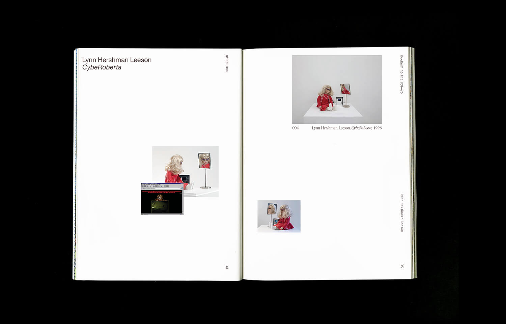
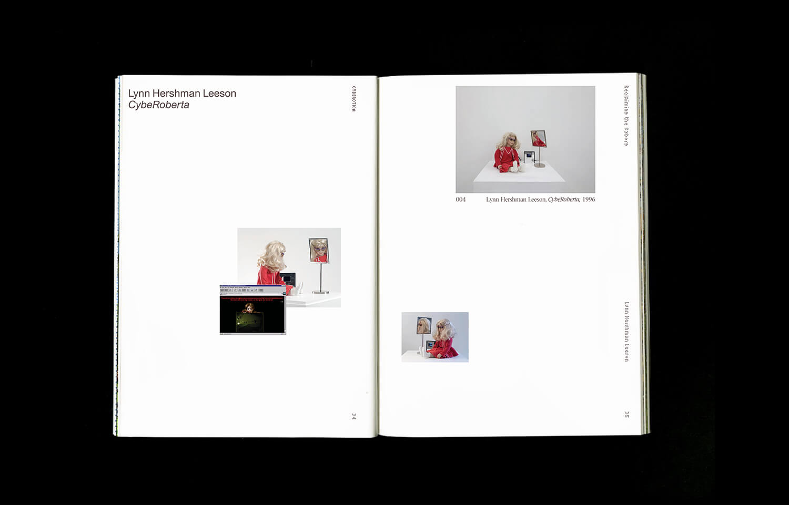

Cyberotica is an anthology of contemporary art. The book compiles recent works by over fifty artists—including Jacolby Satterwhite, Hito Steyerl, and Marguerite Humeau—to explore a prominent motif in the contemporary oeuvre: the chimera of fetish and technology.
Spanning gender politics, decolonization, and techno-utopianism, Cyberotica presents a vast narrative of identity and protest.
This book was designed and completed for the BFA Capstone program at Sam Fox School of Design & Visual Arts. A full PDF — including all 234 pages + covers — is available upon request.

Cyberotica: Technology and Fetish in Contemporary Art, 2020


 
